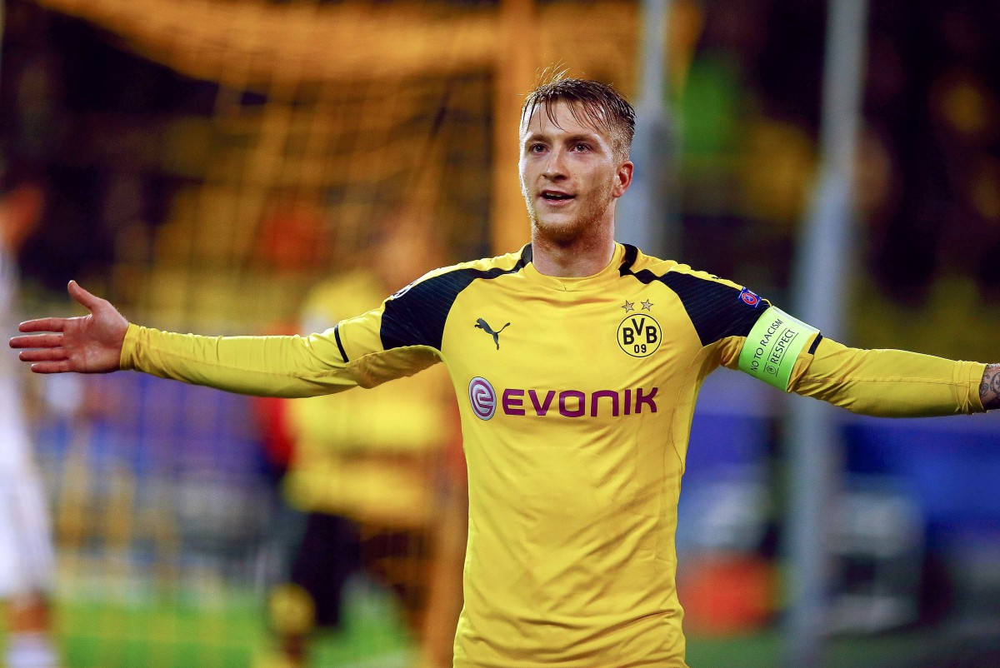
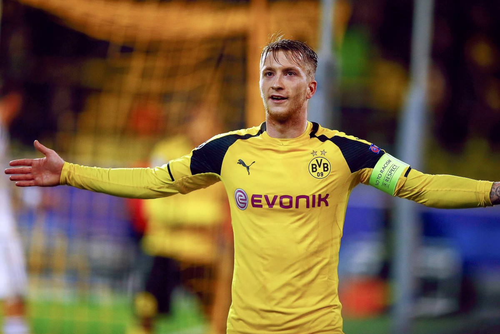
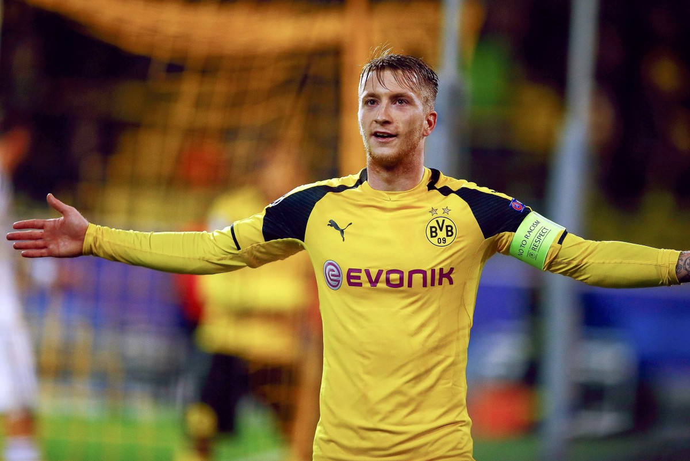

The UEFA Champions League (abbreviated as UCL) is an annual club football competition organised
by the Union of European Football Associations (UEFA) and contested by top-division European clubs.
It is one of the most prestigious tournaments in the world and the most prestigious club competition
in European football, played by the national league champions (and, for some nations, one or more runners-up)
of the strongest UEFA national associations.
Introduced in 1955 as the European Champion Clubs' Cup, or simply
European Cup, the competition took on its current name in 1992, adding a group stage to the competition and allowing
multiple entrants from certain countries. The pre-1992 competition was initially a straight knockout tournament
open only to the champion club of each nation. During the 1990s, the format was expanded, incorporating a round-robin
group stage to include clubs that finished runner-up of some nations' top-level league. While most of Europe's national
leagues can still only enter their national league champion, Europe's strongest national leagues now provide up to five
teams for the competition.Clubs that finish next-in-line in each nation's top level league, having not qualified
for the UEFA Champions League competition, are eligible for the second-tier UEFA Europa League competition.
News
2019 last 16 teams & fixtures
The last 16 stage of the Champions League will commence the week of February 12 and end the week of March 13
Real Madrid are the defending champions, having won the title for three successive seasons in 2015–16, 2016–17
and 2017–18.
Team 1
Agg
Team 2
1stLeg
2ndLeg
Shalke
1
Manchester City
Feb 20
March 12
Atletico Madrid
2
Juventus
Feb 20
March 12
Manchester United
3
PSG
Feb 12
March 06
Tottenham
4
Borussia Dortmund
Feb 13
March 05
Lyon
5
Barcelona
Feb 19
March 13
Roma
6
Porto
Feb 12
March 06
Ajax
7
Real Madrid
Feb 13
March 05
Liverpool
8
Bayern Munich
Feb 19
March 13
Champions League 2018/19 Draw
Upcoming
12/13/19/20 FEBRUARY: Round of 16 First leg
5/6/12/13 MARCH: Round of 16 Second leg
15 MARCH: Quarter-final and Semi-final draws
9/10 APRIL: Quarter-finals, First leg
16/17 APRIL: Quarter-finals, Second leg
30 APRIL/1 MAY: Semi-finals, First leg
7/8 MAY: Semi-finals, Second leg
1 JUNE: Final - Estadio Metropolitano, Madrid
Gallery

Latest News
Liverpool FC
The defender has had such a big impact at his club that his fee has been forgotten, according to his team-mate
Liverpool attacker Sadio Mane praised Virgil van Dijk for his impact at the club, saying the Dutchman had proven
to be one of the world's best defenders.
Van Dijk was signed by Liverpool from Southampton for a reported 75million pounds in January, putting him under pressure
to deliver.
But the 27-year-old has starred under Jurgen Klopp, whose team hold a four-point lead atop the Premier League.
Read more
Juventus
The Roma manager would have preferred his side to be facing an opposition without the star forward
Roma coach Eusebio Di Francesco wishes Juventus were without Cristiano Ronaldo for their clash on Saturday,
labelling the superstar "danger number one".
Ronaldo will be rested before the end of 2018, but the 33-year-old will face Roma.
The Portuguese forward has continued to star since joining Juve, scoring 12 goals in 21 games in all competitions.
Read more
Borussia Dortmund
The Spanish striker has been in superb form this season and is the Bundesliga's top goalscorer with 12 goals
Borussia Dortmund suspect striker Paco Alcacer suffered a torn muscle during their Bundesliga win over Borussia
Monchengladbach on Friday.
Dortmund extended their lead at the top of the table back to nine points with a 2-1 victory at Signal Iduna Park,
in what was their last match ahead of the German domestic winter break.
And they had to do it largely without talisman Alcacer, who has 12 Bundesliga goals to his name this season, after
he came off in the 34th minute.
Read more
Tottenham Hotspur
Harry Kane and Son Heung-min starred in a remarkable and breathless 6-2 Tottenham win at Everton on Sunday.
Tottenham produced a devastating display of attacking football as Son Heung-min and Harry Kane inspired
the 6-2 hammering of Everton in a Premier League Christmas cracker, moving Spurs to within two points of Manchester City.
The past week had been dominated by speculation linking Mauricio Pochettino with the Manchester United manager's job,
and Spurs' attack-minded showing at Goodison Park showed exactly why the Argentinian is a front-runner.
A thrilling first half started positively for Everton and they went ahead through former Arsenal man Theo Walcott,
but they gifted Son an equaliser, and Dele Alli and Kane made things worse before the break.
Read more
FC Bayern Munich
To have three ties between English and German clubs is fantastic.
Two will be very close and come down to fine details. The other looks a question of the margin of victory.
Liverpool against Bayern is the tie of the round, a special game.
You have so many battles. Jurgen Klopp against Niko Kovac, Manuel Neuer in one goal, Alisson in the other,
a team that is growing against one that is maybe going the other way.
And up front, Mo Salah, so determined to make up for what happened in last season’s final loss to Real Madrid,
and Robert Lewandowski.
Read more

 
